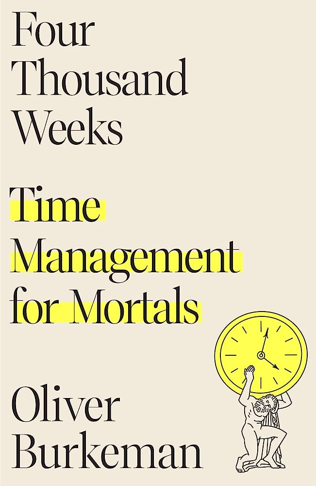

Hello everyone and welcome to my review blog! This page is dedicated to talking about topics I care alot about and giving my opinion on them. This purpose of this page is to do something I think I am fairly proficient at: COMPLAINING. Not everything I will be discussing will be negative however, as I want to talk about things I enjoy also. I want to preface my webpage by saying that this site is purely satirical, alot of the critiques I will be making are entirely subjective and not meant to be taken seriously.
My name is Roel and I work in the United States Air force. In my sparetime my friends and I watch tv shows, movies, play videogames and nerd out about them for countless hours (this is mostly where the inspiration for this page comes from). In fact, see our watchlist [hyperlink 'watchlist' with the google doc] , a google document that containes every show and movie we have watched.
I also like to do non-nerdy activities like working out and watching sports. I am by no means a bodybuilder or have any intention to be one but exercising allows me to destress and overall improves my confidence. I have been consistently going for about two years now and it has became routine for me. Have any questions about it? let me know here
[add like a input box for a user to ask a question about the gym]I also enjoy sports! I consider myself an all-rounder when it comes to discussing the matter however I have a crazy passion for soccer (football for non-americans). Teams, players, tactics, playstyles, I can go on for hours about this sport (it truly is the beautiful game!) Head to my sports page [hyperlink this to your sports section] to learn more about my interests in this matter.
Additionally, I love to read. Currently, I am reading "Four Thousand Weeks: Time Management for Mortals" by Oliver Burkeman. My favorite genres are sci-fi, self-development, and classics such as "The Once and Future King" and "The Illiad and the Odyssey".
The book I am currently reading
My blog will provide webpages that vary depending on the topic being discussed (i.e. a sports page, a gaming page) Click on the links below to be teleported to each page to learn more about what I think about these topics.
This concludes the home page! Enjoy the content I have provided and any feedback is welcomed! A majority of this site will be under construction so please bear with me as I continue to develop the site.